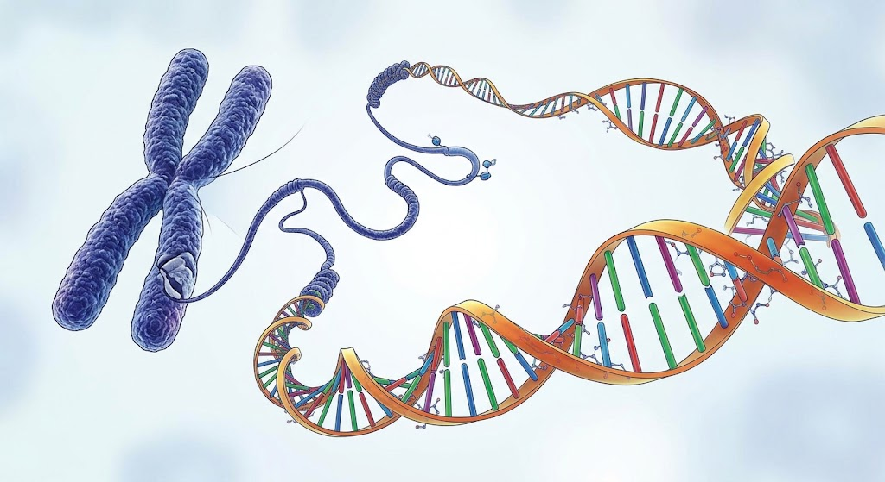

โครงสร้างและหน้าที่ของ DNA
DNA หรือกรดดีออกซีไรโบนิวคลีอิก (Deoxyribonucleic Acid) เป็นสารพันธุกรรมที่เก็บข้อมูลสำหรับการสร้างและควบคุมการทำงานของสิ่งมีชีวิต DNA พบได้ในโครโมโซมภายในนิวเคลียส และพบในออร์แกเนลล์บางชนิด เช่น ไมโทคอนเดรียและคลอโรพลาสต์
DNA มีโครงสร้างเป็นสายคู่บิดเป็นเกลียว เรียกว่า เกลียวคู่ (Double Helix) ประกอบด้วยหน่วยย่อยที่เรียกว่า นิวคลีโอไทด์ แต่ละนิวคลีโอไทด์ประกอบด้วยน้ำตาลดีออกซีไรโบส หมู่ฟอสเฟต และเบสไนโตรเจน
เบสไนโตรเจนมี 4 ชนิด ได้แก่ อะดีนีน (A) ไทมีน (T) ไซโทซีน (C) และกวานีน (G) โดย A จับคู่กับ T และ C จับคู่กับ G การเรียงลำดับของเบสเป็นรหัสที่เก็บข้อมูลทางพันธุกรรม DNA มีหน้าที่ควบคุมการสร้างโปรตีน ถ่ายทอดข้อมูลทางพันธุกรรม และเป็นต้นแบบในการจำลองตัวเองก่อนการแบ่งเซลล์